Portfolio 2026
이민
UI/UX 디자이너
경력 12년
활용가능 Tool
Design Tools — Figma, Adobe XD, Photoshop, Illustrator, Indesign (고급)
Web/Dev — HTML/CSS (유지, 수정업무 가능), vibe coding
문서 활용 Tool — 한글, 엑셀, PPT, Notion
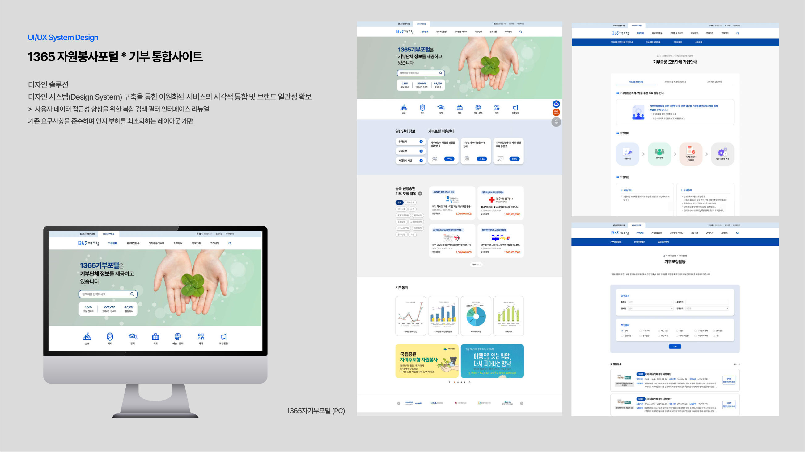
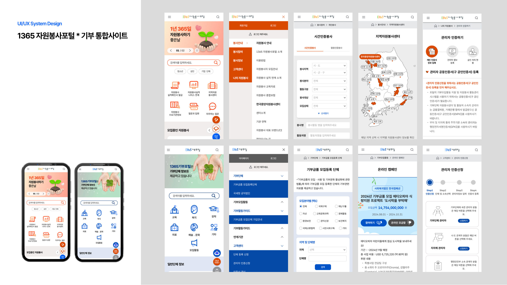
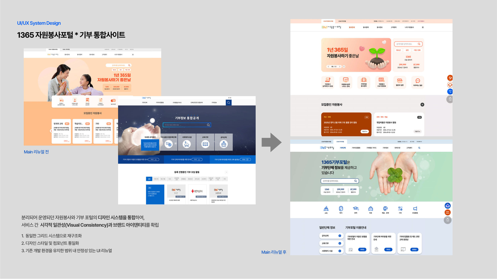
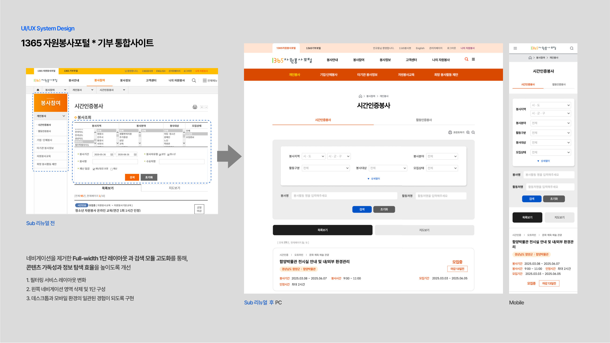
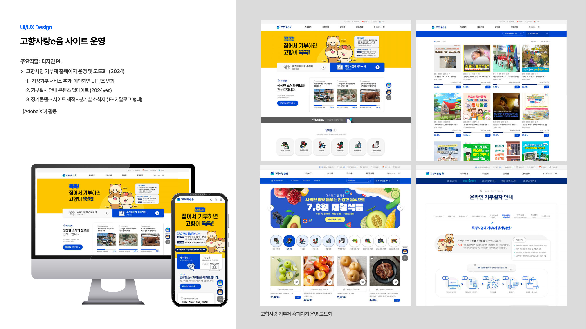
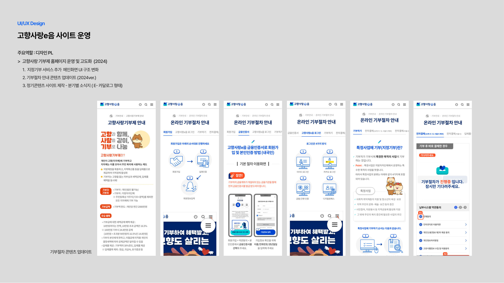
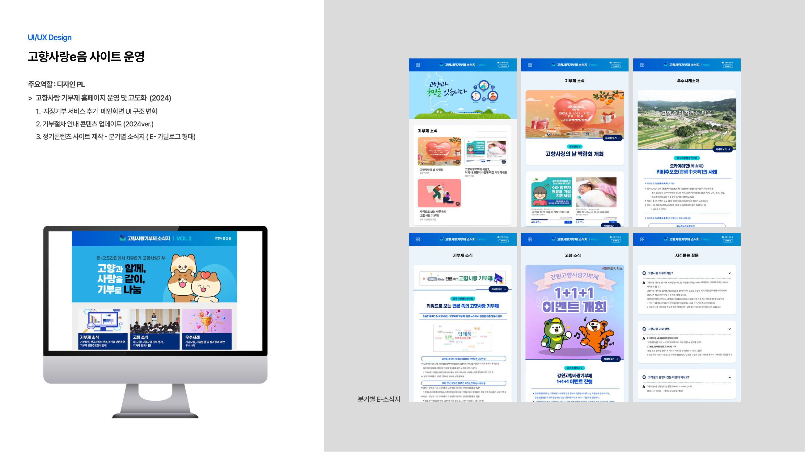
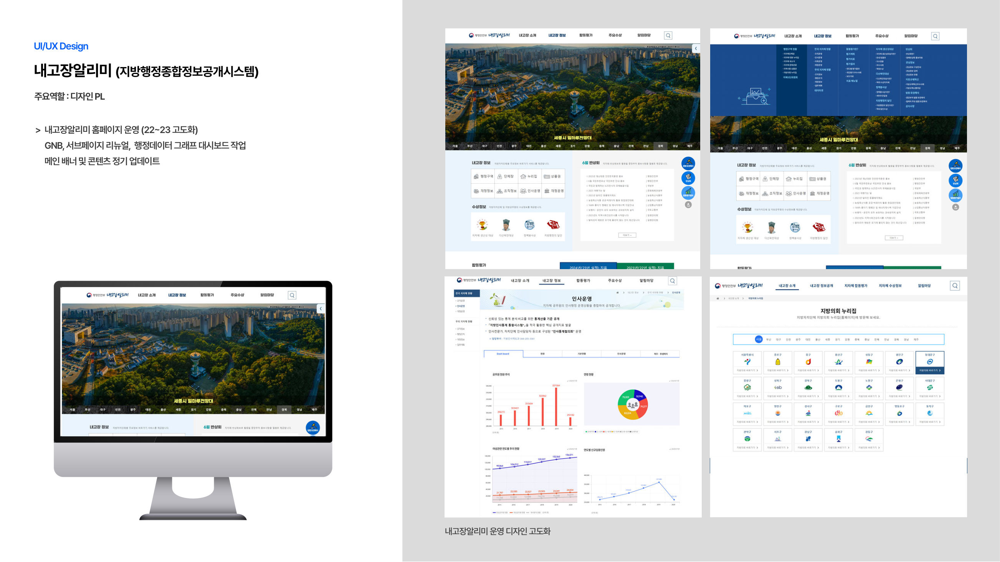
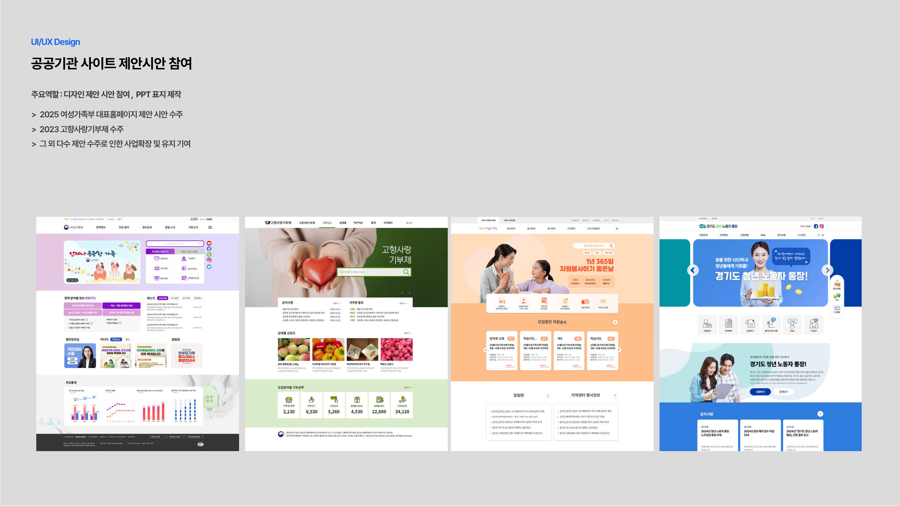
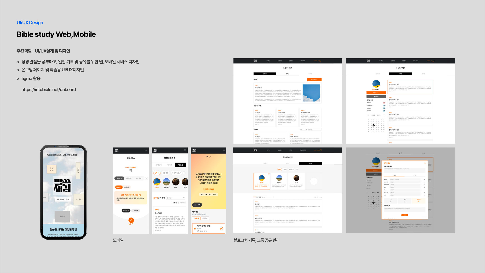
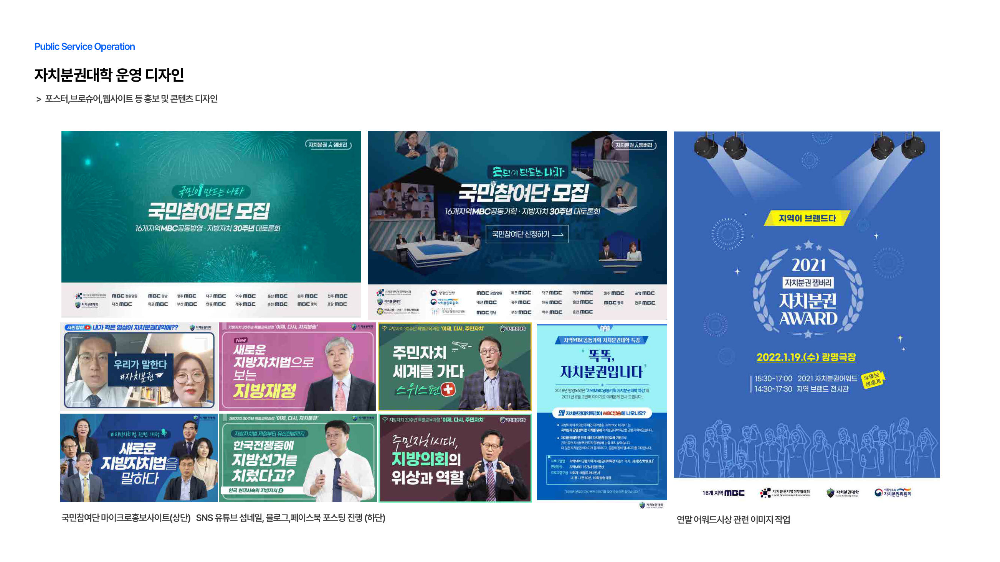
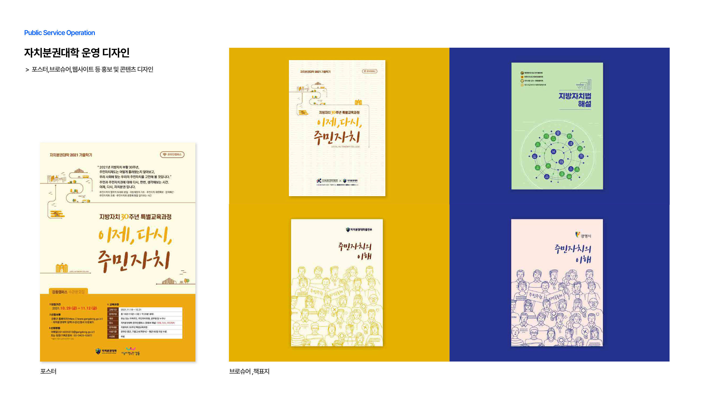
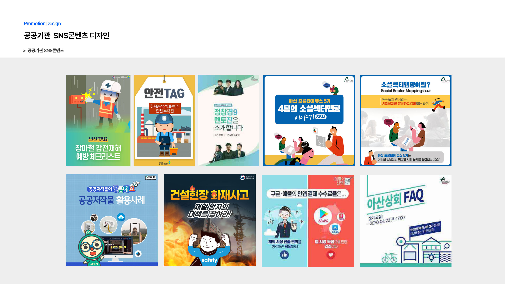
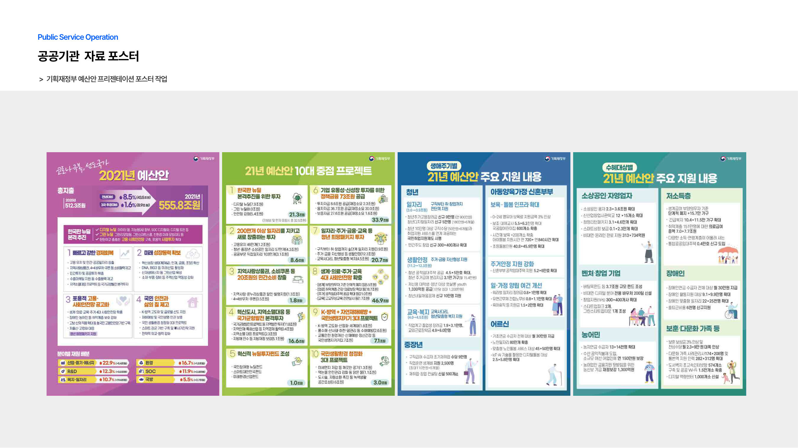
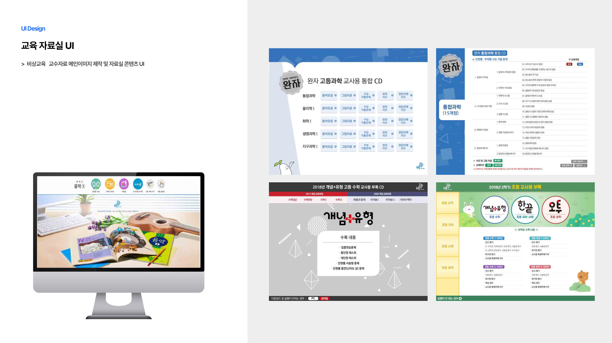
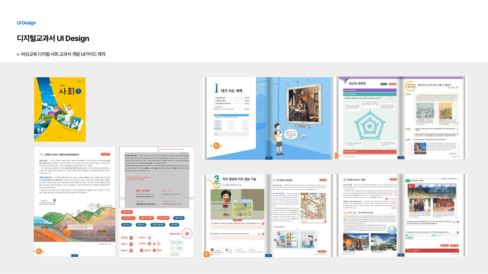